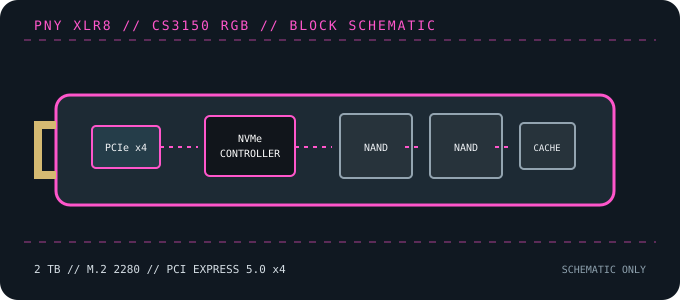

[ PCIE 5.0 NVME DRIVES // IDENTIFIED PRODUCT ]
PNY XLR8 CS3150 RGB 2 TB (M280CS3150XHS-2TB-RB)
A specific 2 TB CS3150 XLR8 variant with a large dual-fan RGB heatsink, identified as M280CS3150XHS-2TB-RB. Its physical cooling assembly and wiring are essential fit constraints.

IDENTIFICATION: Confirm the printed model code, capacity, suffix, hardware revision and firmware against the actual drive. Similar family names can denote different heatsinks, controller platforms and performance. Values here identify the cited 2 TB SKU and remain subject to the linked manufacturer documentation.
Manufacturer-identified specifications
| Model / manufacturer code | PNY XLR8 CS3150 RGB 2 TB (M280CS3150XHS-2TB-RB) — M280CS3150XHS-2TB-RB |
|---|---|
| Capacity / physical format | 2 TB; M.2 2280 SSD with integrated dual-fan RGB heatsink assembly |
| Interface / lane width | PCI Express 5.0 x4; backward operation depends on host PCIe/NVMe support. |
| Protocol | NVMe command protocol; exact revision and optional features depend on drive firmware and host support. |
| Vendor-rated sequential performance | Up to 11,500 MB/s read / 8,500 MB/s write on PNY’s current CS3150 product page; peak ratings, not sustained guarantees. Independent sample databases/reviews may report different results; verify the exact SKU and current revision. |
| Endurance / warranty | 1,400 TBW; 5 years or rated TBW, subject to manufacturer terms |
| Controller / flash | Phison E26 (reported for this model); 3D TLC NAND. Component details can vary by production revision; use the exact drive label and current manufacturer documentation. |
| Cooling / package note | This SKU includes an unusually tall, powered dual-fan/RGB heatsink assembly. Verify case/board clearance, power/control connectors and fan software support from PNY documentation; do not install under a motherboard M.2 cover or remove the factory cooler without PNY guidance. |
Compatibility, installation & service
- For peak speed, use an M.2 PCIe 5.0 x4 NVMe socket; lower-generation compatible hosts reduce link bandwidth. Confirm the board accepts the drive’s complete cooler envelope, not just an 80 mm module.
- The factory cooler has fans and RGB wiring. Check PNY’s current manual for the required internal connections, control software and power arrangement, plus physical clearance from GPUs and board covers.
- This is not a simple bare-module replacement: do not remove the cooler or substitute another thermal pad/cover unless PNY documentation explicitly permits it. Confirm UEFI/NVMe boot support separately.
- Before replacing a boot drive, create a recoverable backup and confirm OS recovery media, encryption keys and firmware settings. Follow clean shutdown and electrostatic-discharge precautions; do not hot-plug M.2 unless the platform manual explicitly supports it.
Product references
- PNY — CS3150 M.2 NVMe SSD with RGB heatsinkOfficial family page for the integrated RGB/heatsink version.
- TechPowerUp — PNY CS3150 XLR8 RGB 2 TB reviewIndependent testing of the 2 TB RGB/heatsink configuration.
Manufacturer ratings are capacity- and test-condition-specific. Independent tests characterize only the tested sample and workload. Consult current manuals and support portals for revisions, fit, firmware and warranty conditions.